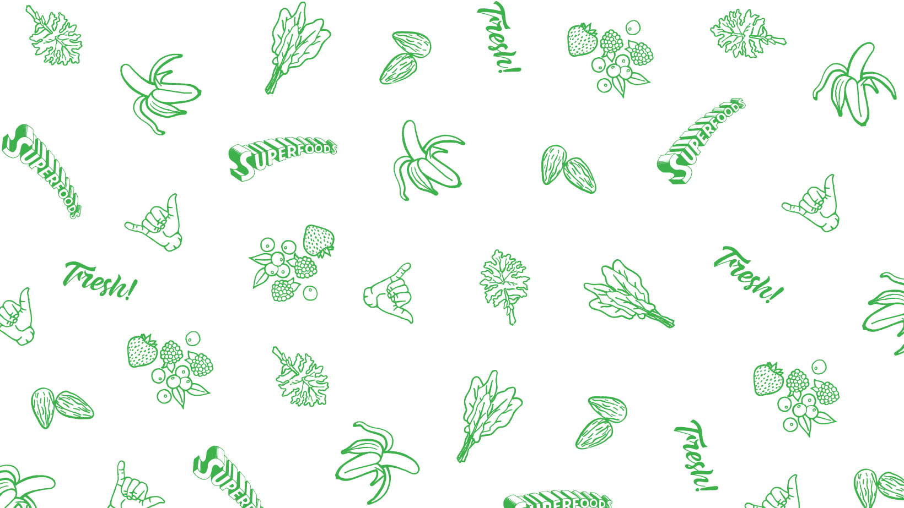
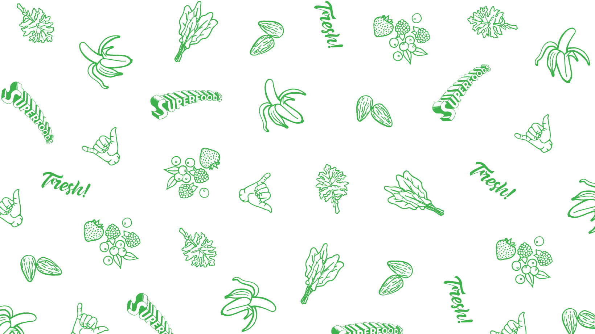

Hard working, resilient, open minded, get along with a number of different personalities
Prioritisation, keeping to time constraints, getting tied up in the detail instead of focusing on the bigger picture
I’ve decided to implement a Trello board for the next few sprints to assist with my prioritisation and time management. It also allows for a visual of the tasks I need to check off alongside the allocated time they should take. I will spend a bit more time in the planning and scheduling process so I can allocate time slots in my Google calendar for the entire sprint and which tasks I’ll be working on.
Seeking help is a limitation of mine, I quite often get stuck but tend to put the task aside and then revisit it from a new perspective. The problem I have found with this is it’s quite easy for it to stump your learning speed. To remedy this I will also time block my problem solving, if I can’t solve the issue in a reasonable time I will fire a slack message to Aubrey, Code help desk or Kelly.
I’ll need to stay on top of work commitments and have systems in place for certain scenarios before bootcamp. My partner and I are expecting a baby girl in November so that will add another complexity to the workload.
Foundations (1st September - 22nd December)
Boot Camp - Harekeke (7th January - 8th March)